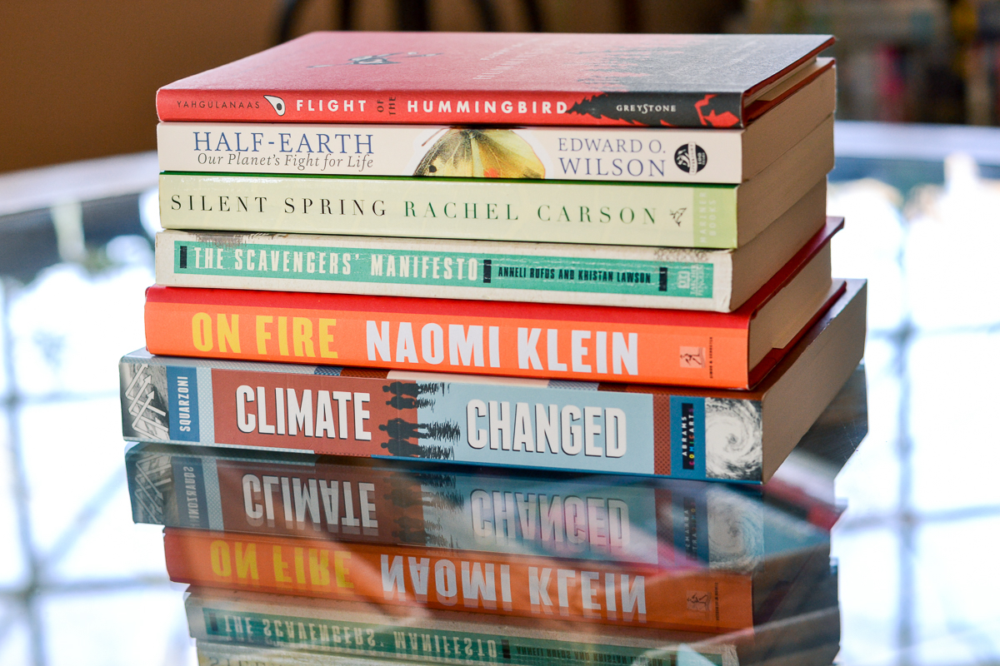

Latest Articals
spotlight
Conflict and climate change in the Arctic: what the seventeenth century suggests about the future
By Dagomar Degroot Environment & History, essay no. 13 In the final article of our ‘Environment & History’ series, Professor Dagomar Degroot looks to early modern climate change to ask whether arctic warming necessarily results in violent...

Feature & Articales

The Gough Map Project: A Tale of Two Maps

The Bibliography of British and Irish History (BBIH): Recovering Emotions in Historical Research

TPublic History in Action: VCH Wiltshire and the Bremhill Parish History Project

TAt home in history: Claire Langhamer on her first months as IHR Director
Publication News

VCH Outstanding Contribution Awards 2022

Supporting Early-Career Historians: The Victoria County History

New from the Victoria County History: Launching Tamworth

New from the Victoria County History of Oxfordshire: The South Oxfordshire Chilterns: Caversham, Goring, and Area
Research & Resoures

Exploring collections for History Day
.jpg)
Call for Section Editors: Bibliography of British and Irish History (BBIH)

Get ready for the new academic year with the Bibliography of British and Irish History (BBIH)